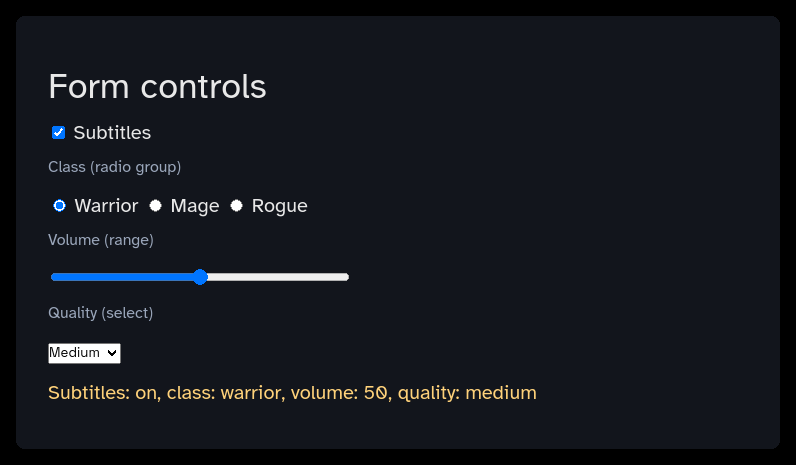

Forms¶
Use form controls when the player sets a flag, picks one of a few options, drags a value or chooses from a list, and a view model must see the choice.
The FormControls sample has a checkbox, a radio group, a range and a select. Each shows a model value and sends every change
back; a readout under them shows what the view model holds. Most form markup and CSS from a web page works; see the limits below. Run the sample with ArcRmlSamples.Open FormControls
in the console in the map L_ArcRmlSamples (Samples). Text
fields have their own page: Text fields.

Show and write back¶
A binding on a control only shows the model value. The control's change does not reach the view model by itself: a model variable is read-only, and a write from the control is refused without a warning. Send the change with an event handler that calls a view model function:
data-checked,data-valueanddata-attr-valueset the control from the model.data-event-inputanddata-event-changehear the user's change andcall()a function that sets the field.
A value written by a binding fires no event.
The sample's view model has one field and one setter per control. This is the checkbox's pair (excerpt of
ArcRmlSamplesFormControls.h; ClassName, Volume and Quality follow the same pattern). A Blueprint view model
uses a variable and a function instead (Blueprint view models):
UPROPERTY(BlueprintReadOnly, FieldNotify, Category = "Samples")
bool bSubtitles = true;
UFUNCTION(BlueprintCallable, Category = "Samples")
void SetSubtitles(bool bValue);
Checkbox¶
<input id="fc-subtitles" type="checkbox" autofocus=""
data-checked="bSubtitles"
data-event-change="call('', 'SetSubtitles', ev.checked)"/>
<label for="fc-subtitles">Subtitles</label>
data-checkedwith a bool checks the box when the bool is true.- A toggle by click, Space, Enter, gamepad accept or a click on its
<label>firesinput, thenchange.ev.checkedis the box's state after the toggle. ev.valueof a checkbox or radio is itsvalueattribute (onwithout one), checked or not. Useev.checkedfor the state.
Bind a checkbox with data-checked
data-attr-checked="Flag" writes the bool as text, so a false value sets checked="0". Any checked attribute checks
the control, so the box stays checked. data-checked="Flag" (a bool, or a string equal to the control's value) and
data-attrif-checked="Flag" (the attribute is set when true and removed when false) check and uncheck correctly.
Radio group¶
<input id="fc-warrior" type="radio" name="class" value="warrior"
data-checked="ClassName" data-event-change="call('', 'SetClassName', ev.value)"/> Warrior
<input id="fc-mage" type="radio" name="class" value="mage"
data-checked="ClassName" data-event-change="call('', 'SetClassName', ev.value)"/> Mage
<input id="fc-rogue" type="radio" name="class" value="rogue"
data-checked="ClassName" data-event-change="call('', 'SetClassName', ev.value)"/> Rogue
- Radios with the same
nameare one group: checking one unchecks the others. A group is the radios inside the same<form>; radios outside every<form>form one group per document and do not mix with the radios of a form. data-checkedwith a string checks the radio whosevalueequals the string. The samedata-checked="ClassName"on each radio therefore selects the one that matches. An empty string checks none.- Picking an unchecked radio fires
inputandchangeon that radio only; the radios it unchecks and a radio that is already checked fire nothing.ev.valueis the picked radio'svalue.
Range¶
<input id="fc-volume" class="fc-range" type="range" min="0" max="100" step="5"
data-value="Volume"
data-event-input="call('', 'SetVolume', ev.value)"/>
data-valuesets the slider.inputfires for every change the user makes while dragging or stepping,changeonce at release and once per key step; both carryev.value. Usedata-event-inputfor a live readout anddata-event-changeto commit.- A value is clamped to
minandmaxand snapped tostep. - Gamepad and keyboard: the range is a focus stop. Left and Right step it (Up and Down for
orientation="vertical"), Home and End jump tominandmax. Up and Down on a horizontal range move focus, as anywhere else.
Select¶
<select id="fc-quality" data-attr-value="Quality" data-event-change="call('', 'SetQuality', ev.value)">
<option value="low">Low</option>
<option value="medium">Medium</option>
<option value="high">High</option>
</select>
data-attr-valueselects the option whosevaluematches.inputandchangefire when a pick changes the value.- On a closed select Enter, Space or gamepad accept open the list with the selected option highlighted. Up and Down move the highlight, Home and End jump to the first and last option, and Enter, Space or gamepad accept pick it. A mouse click on an option picks it.
- Esc or gamepad back close the open list and keep the value; the Back stops there and does not close the screen. On a closed select Back works as usual.
- Up and Down on a closed select move focus; they do not change the value.
Readout¶
<p id="fc-readout" class="fc-result">Subtitles: {{ bSubtitles ? 'on' : 'off' }}, class: {{ ClassName }}, volume: {{ Volume }}, quality: {{ Quality }}</p>
The readout reads the view model, so it shows the value after the setter has run.
Limits
- A control's change never writes to a model field; call a view model function (Limits).
- A
value,checkedorselectedset by a binding or an attribute fires no event. - A control draws Chrome's native look, without its hover, active, focus and disabled looks. To style a control
yourself, set
appearance: noneand use your own CSS. - A
<button>never submits a<form>; only an enabled<input type="submit">inside the form does. Thetypeandvalueof a button are plain attributes.
Run it¶
Play in the map L_ArcRmlSamples, then type in the console:
ArcRmlSamples.Open FormControls
Click the checkbox, pick a radio, press Left or Right on the range, press Enter on the select, move with Up and Down, press Enter again to pick.
ArcRmlSamples.Close closes it again.
You should see the readout Subtitles: on, class: warrior, volume: 50, quality: medium, and it changes with each control
you use.